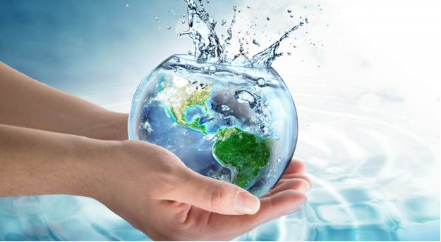

Conserve Water
What is conserving water?
Water conversation is a practice of using water efficiently to reduce unnecessary water usage. It is important because fresh clean water is a limited resource, as well as a costly one.
